← Index · ← Previous · Next →
Authors: Kaijun Yin, Jun-Ping Du, Peijun Yu, Rui Feng, Hanyu Hou, Haw-Wen Hsiao, Ke An, Peter K. Liaw, Shigenobu Ogata, Jian-Min Zuo
Type: both · Category: numerical methods · PDF: https://arxiv.org/pdf/2609.36780v1
Analysis basis: abstract only; PDF text extraction failed or PDF unavailable
Topic relevance: methods for driven-dissipative 3/5 · Keldysh / 2PI / non-Gaussian methods 2/5 · analog quantum simulation 2/5 · driven-dissipative phase transition 2/5 · non-equilibrium universality 2/5 · Frenkel-Kontorova 1/5 · correlated / nonlocal dissipation 1/5 · quantum measurements 1/5 · scars & prethermalization 1/5
Summary. This work establishes a distribution-based framework to understand how local chemical disorder dictates mechanical deformation in complex alloys like CrCoNi. By linking measured fault widths to the apparent fault energy landscape, the authors show that energy fluctuations are stabilizing and that thermal history dictates the competition between various deformation mechanisms. This provides a crucial, experimentally grounded tool for materials science.
Why it may be interesting. While focused on materials science, the use of kinetic Monte Carlo simulations and developing a distribution-based framework to model complex, history-dependent energy landscapes shares methodological overlap with modeling non-equilibrium dynamics in open quantum systems or disordered quantum materials.
Main problem. Quantifying the role of the distributed local fault energy landscape in the deformation mechanisms of chemically complex alloys is experimentally challenging.
Main result. The study reveals a distributed local fault-energy landscape in CrCoNi, showing that energy fluctuations stabilize the system and that heat treatment causes an upward shift in apparent fault energetics, which biases deformation pathways.
Method. The authors develop a distribution-based framework linking measured stacking fault widths to apparent fault energy, supported by kinetic Monte Carlo simulations and electron microscopy observations.
Model / system. The system studied is a chemically complex alloy, specifically CrCoNi. The model involves analyzing the local fault-energy landscape, which is influenced by local chemical order (e.g., L12 type short-range order).
Key observables. Experimentally measured stacking fault widths, apparent fault energy, and the competition between stacking faulting, nano-twinning, and HCP transformation.
Important parameters / regimes. Local chemical environment heterogeneity, temperature/heat treatment history, and the resulting local fault energy distribution.
Assumptions / limitations. The framework assumes that the local fault energy landscape can be described by a distribution derived from experimental measurements.
Paper structure. The paper introduces the problem of quantifying distributed fault energetics in complex alloys, develops a distribution-based framework using experimental data (stacking fault widths), and then applies this framework using kinetic Monte Carlo simulations and microscopy to show history-dependent biasing of deformation modes.
Chemically complex alloys feature intrinsically heterogeneous local chemical environments and, consequently, fluctuations in local fault energetics. However, experimentally quantifying their relationship remains challenging, leaving the role of this distributed energy landscape in deformation mechanisms incompletely resolved. Here, we develop a distribution based framework linking experimentally measured stacking fault widths to deformation relevant apparent fault energy, revealing a distributed local fault-energy landscape in CrCoNi. The framework reveals the stabilizing role of energy fluctuations and captures an upward shift in the apparent fault energetics, from negative values toward zero following heat treatment, which atomistic simulations associate with the emergence of L12 type chemical short-range order. Using one-dimensional kinetic Monte Carlo simulations, supported by electron microscopy observations, we further show that history-dependent changes in the local fault-energy landscape bias the competition among stacking faulting, nano-twinning and HCP transformation in CrCoNi. Our results provide an experimentally anchored, distribution-based framework for understanding deformation in chemically complex alloys as it evolves within a distributed fault-energy landscape shaped by local chemical order.
Authors: Soma Miki, Yoshishige Suzuki, Ryo Ishikawa, Yuki Hibino, Shunya Morishita, Hiroto Imanishi, Keigo Adachi, Yoichi Shiota, Takayuki Nozaki, Minori Goto, Hikaru Nomura, Shigemi Mizukami, Eiiti Tamura
Type: experiment · Category: statistical mechanics · PDF: https://arxiv.org/pdf/2609.36955v1
Analysis basis: full PDF text, analyzed in chunks
Topic relevance: driven-dissipative phase transition 3/5 · non-equilibrium universality 3/5 · analog quantum simulation 2/5 · methods for driven-dissipative 2/5 · quantum measurements 2/5 · Keldysh / 2PI / non-Gaussian methods 1/5 · correlated / nonlocal dissipation 1/5
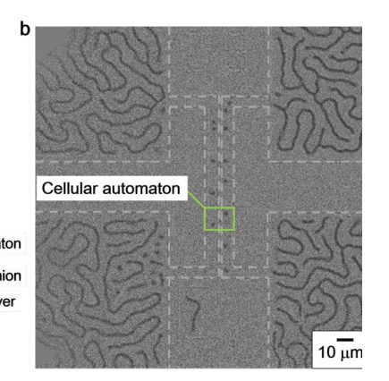
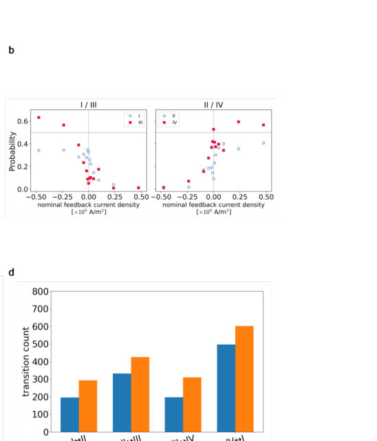
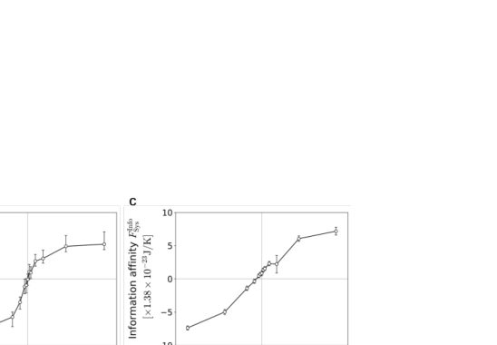
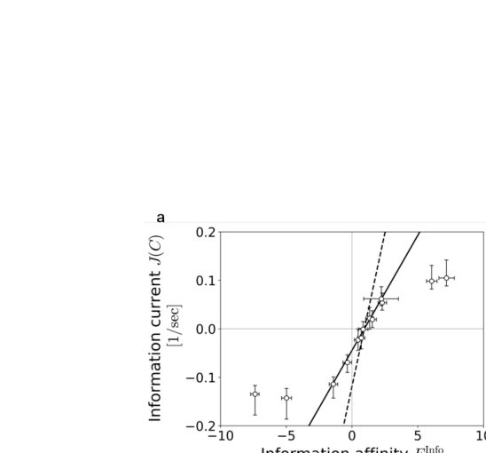
Summary. The research demonstrates Ohm's law for information by creating an information engine using magnetic skyrmions. By analyzing the steady-state current flow driven by a feedback mechanism analogous to Maxwell's demon, the authors show that the information current is linearly proportional to the driving information affinity. This provides a novel, solid-state platform for studying information thermodynamics.
Why it may be interesting. This work provides a tangible, solid-state realization of non-equilibrium thermodynamics principles, specifically linking information flow (entropy/information) to measurable electrical-like laws (Ohm's law), which is highly relevant to open quantum systems and energy transduction.
Main problem. The primary goal is to experimentally establish an Ohm-like constitutive relationship for information transport, drawing an analogy between electrical circuits and information thermodynamics.
Main result. The authors successfully demonstrated that the information current generated in their system is proportional to the information affinity, thereby establishing Ohm's law for information in a physical platform.
Method. The experiment involves realizing an information engine using two magnetic skyrmions undergoing Brownian motion at room temperature, monitored via magneto-optical microscopy.
Model / system. The system is modeled as a bipartite network of four states (vertices) connected by a closed loop, where information flow is quantified using transition rates and state probabilities.
Key observables. Information current (J_n), Information affinity ($\mathcal{F}_{ ext{Sys}}^{ ext{Info}}$), and Information conductance ($L_{ ext{Sys}}^{ ext{Info}}$).
Important parameters / regimes. Room temperature operation, feedback current density (e.g., $0.094 imes 10^9 ext{ A/m}^2$), and the system's magnetic skyrmion dynamics.
Assumptions / limitations. The relationship must be slightly modified in real circuits to account for interactions between information carriers and the scattering of the information current.
Figures summary. Figures illustrate the schematic setup, the four-state loop, the dependence of vertex probabilities on feedback current, and plots confirming the linear relationship between information current and information affinity.
Paper structure. The paper establishes the theoretical link between information affinity and current, details the experimental setup using skyrmions, measures the resulting information current and affinity, and finally verifies the linear proportionality (Ohm's law) and discusses necessary corrections.
Reducing the energy cost of computation-a pressing issue in the age of AI-requires a framework for circuit design based on information thermodynamics. By extending non-equilibrium statistical mechanics to information thermodynamics, it has been shown that a probability flow carrying information-hereinafter referred to as an 'information current'-is driven by its conjugate thermodynamic force, namely 'information affinity'. Since information affinity plays a role analogous to that of voltage in an electrical circuit, it is suggested that information transport also follows a linear response relationship analogous to Ohm's law. However, despite this theoretical prediction, experimentally establishing an Ohm-like constitutive relation for information transport remains an important unsolved problem. Here, we realise an information engine consisting of two magnetic skyrmions undergoing Brownian motion at room temperature. We demonstrate that the resulting information current is proportional to the information affinity generated by Maxwell's demon over a relatively wide range, establishing Ohm's law for information. Furthermore, we clarify that, in real information circuits, both Ohm's law for information and Kirchhoff's voltage law must be slightly modified to account for interactions between information carriers and the scattering of the information current.
Authors: A. A. Gunyaga, M. V. Durnev, S. A. Tarasenko
Type: theory · Category: other · PDF: https://arxiv.org/pdf/2609.37010v1
Analysis basis: full PDF text, analyzed in chunks
Topic relevance: interference shaping light 3/5 · Keldysh / 2PI / non-Gaussian methods 2/5 · methods for driven-dissipative 2/5 · analog quantum simulation 1/5 · quantum measurements 1/5
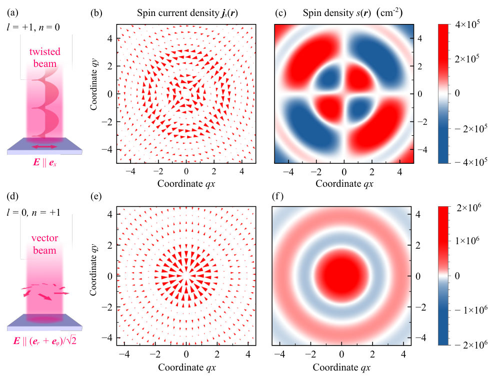
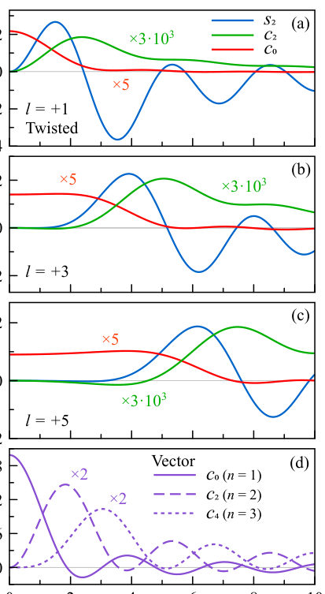
Summary. This paper theoretically demonstrates that structured light beams, such as twisted or vector beams, can spatially separate electron spins in 2D Dirac materials. By analyzing the resulting spin currents, the authors show that the light's spatial pattern can directly dictate the accumulation of spin density in the material. This offers a promising, optically controlled mechanism for spintronics applications.
Why it may be interesting. This work bridges quantum optics (structured light, OAM) with condensed matter physics (spin transport in 2D materials), providing a novel, non-contact method for manipulating electron spin states using light fields.
Main problem. The paper demonstrates that structured light, specifically twisted and vector optical beams, can induce the spatial separation of two-dimensional (2D) Dirac electrons with opposite spin projections.
Main result. Both beam types generate spatially textured spin currents, leading to significant local spin density, suggesting a mechanism to imprint optical beam patterns onto electron spin degrees of freedom.
Method. The authors derived analytical expressions for spin density evolution in quasi-local and diffusion-controlled regimes, solving the spin diffusion-relaxation equation using Green's function methods.
Model / system. The system involves 2D Dirac materials, particularly relevant to transition metal dichalcogenide (TMDC) monolayers. The interaction is modeled as an indirect coupling mechanism driven by the spatial structure of the structured light beams.
Key observables. Spin current density j_s(r) and resulting spin density s(r), which can be probed via Faraday or Kerr rotation techniques.
Important parameters / regimes. Key parameters include the band gap (2\delta = 2 eV), spin relaxation time (τ_s = 10 ns), and the beam's Orbital Angular Momentum (OAM) or polarization winding number (l or n).
Assumptions / limitations. The analysis assumes the spin current generation is controlled by the field's spatial structure and neglects standard optical spin orientation from circularly polarized light, as well as inversion-symmetry breaking effects.
Figures summary. Figure 1 illustrates the spatial distributions of spin currents and densities for both twisted and vector beams. Figure 2 shows the radial evolution of the spin density expansion coefficients for varying OAM.
Paper structure. The paper establishes the physical problem, derives the governing spin diffusion equation, analyzes the spin current generation from structured light (twisted and vector beams), and presents numerical calculations of the resulting spin textures in different physical regimes.
We demonstrate that twisted and vector optical beams can spatially separate two-dimensional electrons with opposite spin projections. Spin accumulation arises from diverging spin currents induced by structured light together with spin relaxation and diffusion. We derive analytical expressions for the resulting spin density in the quasi-local and diffusion-controlled regimes and numerically calculate the spin textures for the parameters relevant to transition metal dichalcogenide monolayers. Our results suggest a mechanism by which the twist and vector pattern of optical beams can be imprinted onto the electron spin degree of freedom.
Authors: L. Medel Onofre, L. E. Sosa-Arias, A. Martín-Ruiz
Type: theory · Category: other · PDF: https://arxiv.org/pdf/2609.36606v1
Analysis basis: full PDF text, analyzed in chunks
Topic relevance: Keldysh / 2PI / non-Gaussian methods 3/5 · methods for driven-dissipative 2/5 · analog quantum simulation 1/5 · quantum measurements 1/5
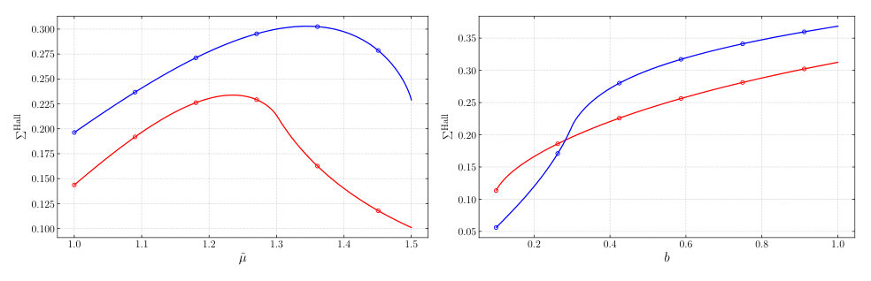
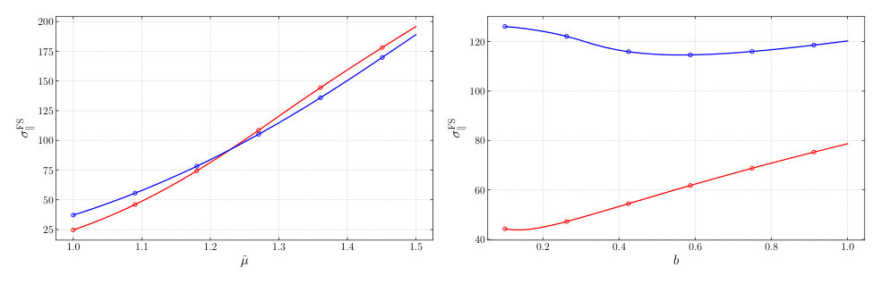
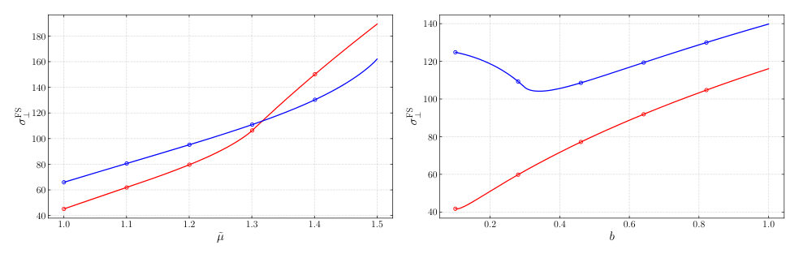
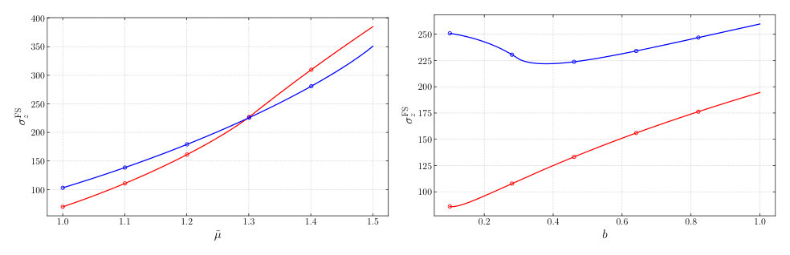
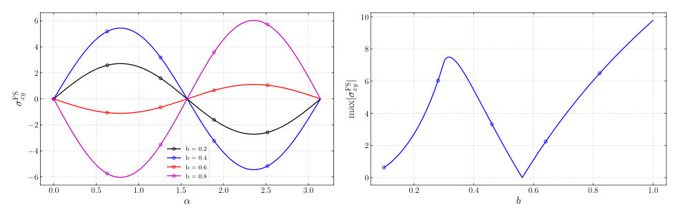
Summary. This paper presents a nonperturbative semiclassical theory for magnetotransport in nodal-line semimetals. It demonstrates that magnetic fields activate intrinsic Hall currents by modifying the geometrically active Fermi surface via the orbital magnetic moment. The work provides a unified framework for understanding topological magnetotransport beyond simple weak-field approximations.
Why it may be interesting. While focused on condensed matter transport, the use of semiclassical wave-packet dynamics and the explicit calculation of Berry curvature effects provide advanced theoretical tools applicable to open quantum systems where geometric phases are crucial.
Main problem. To develop a nonperturbative semiclassical theory describing magnetotransport in gapped nodal-line semimetals.
Main result. The study shows that the orbital magnetic moment reconstructs the active Fermi surface, activating an intrinsic Hall current absent at zero field, and predicts measurable planar Hall effects at intermediate magnetic fields.
Method. The authors employ a semiclassical wave-packet formalism, deriving exact expressions for intrinsic Hall response and dissipative conductivity valid to all orders in the magnetic field.
Model / system. The system is gapped nodal-line semimetals, modeled using a minimal two-band Hamiltonian. The analysis focuses on the geometry of the nodal ring in momentum space.
Key observables. Intrinsic Hall response, dissipative Fermi-surface conductivity, Planar Hall effect, and the dependence of transport on the chemical potential.
Important parameters / regimes. Magnetic field strength (analyzed nonperturbatively), chemical potential ($\mu$), and the proximity of the Fermi level to the nodal ring.
Assumptions / limitations. The semiclassical regime is assumed, and the analysis extends beyond weak-field, perturbative expansions.
Figures summary. Not specified by the notes, but the analysis involves deriving conductivity tensors and showing field-dependent responses.
Paper structure. The paper progresses by introducing the semiclassical Boltzmann formalism, detailing the nodal-line model geometry, evaluating the intrinsic and dissipative responses, and concluding with a unified framework for geometric magnetotransport.
We develop a nonperturbative semiclassical theory of magnetotransport in gapped nodal-line semimetals, retaining the full magnetic-field dependence of Berry-curvature and orbital-magnetic-moment corrections. Starting from a minimal two-band model, we derive exact expressions for both the intrinsic Hall response and the dissipative Fermi-surface conductivity, valid to all orders in the magnetic field within the semiclassical regime. We show that the orbital magnetic moment reconstructs the geometrically active Fermi surface, breaking the azimuthal cancellation imposed by the nodal-line geometry and thereby activating an intrinsic Hall current that is absent at zero magnetic field. The Hall response exhibits a pronounced nonmonotonic dependence on the chemical potential and a strongly nonlinear magnetic-field evolution, reflecting the redistribution of geometrically active states around the nodal ring. We further demonstrate that the Fermi-surface conductivities recover the conventional Drude behavior in the weak-field limit, while acquiring quadratic and ultimately nonperturbative magnetic-field corrections together with a field-induced transport anisotropy that gives rise to a measurable planar Hall effect at intermediate fields. Both the intrinsic and dissipative responses are strongly enhanced when the Fermi level lies close to the nodal ring, where Berry curvature and orbital magnetic moment are largest. Our results identify magnetic-field-activated geometric transport as a characteristic signature of nodal-line semimetals and provide a unified framework for describing magnetotransport beyond perturbative magnetic-field expansions, together with experimentally accessible signatures of orbital-magnetic-moment physics.
Authors: Halil Serdar Solak, Afif Siddiki
Type: both · Category: other · PDF: https://arxiv.org/pdf/2609.37753v1
Analysis basis: full PDF text, analyzed in chunks
Topic relevance: interference shaping light 3/5 · analog quantum simulation 1/5 · quantum measurements 1/5
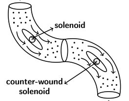
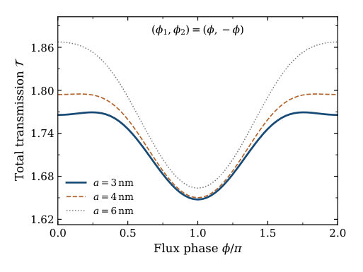
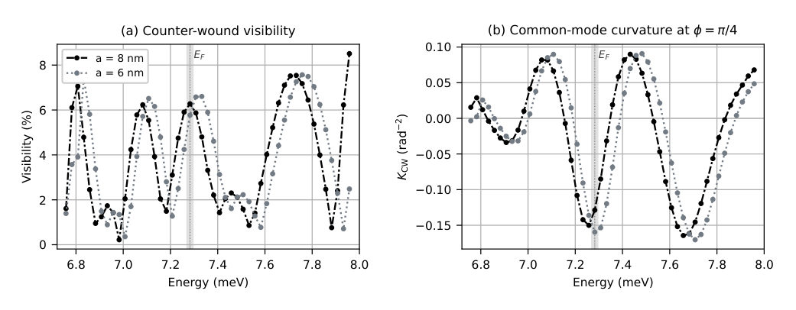
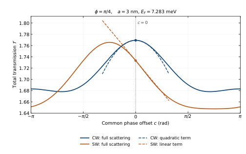
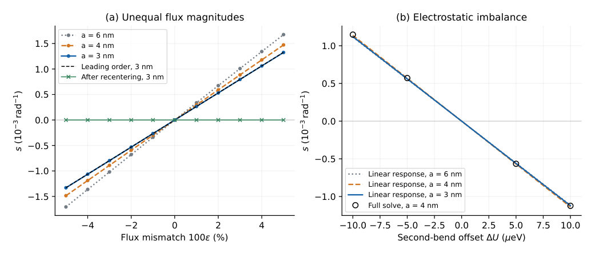
Summary. This work analyzes the robustness of quantum interference in a specialized S-shaped Aharonov-Bohm interferometer by exploiting its geometric and rotational symmetries. The authors demonstrate that the counter-wound geometry protects the system from common magnetic flux drifts, which is a crucial finding for designing stable quantum devices. The study uses advanced 3D scattering calculations to quantify the achievable visibility and noise response.
Why it may be interesting. The focus on symmetry-protected robustness against environmental noise (common-mode drift) in a mesoscopic quantum device is highly relevant to building stable quantum sensors or quantum interconnects.
Main problem. The study investigates how common flux offsets affect the interference visibility in a counter-wound S-shaped Aharonov-Bohm interferometer, leveraging symmetry protection.
Main result. The counter-wound configuration is shown to be stationary against common flux offsets due to symmetry constraints, although the measured visibility remains low (2.6-2.9% continuum estimate).
Method. The research combines theoretical analysis of symmetries (microreversibility, rotational symmetry) with three-dimensional scattering calculations using the Landauer-Büttiker formalism.
Model / system. The system is a 3D InAs Aharonov-Bohm waveguide formed by two quarter-circle bends of opposite curvature, modeled with a spin-independent, two-terminal Hamiltonian.
Key observables. Interference visibility, transmission variance, mean shift, and the response coefficients to common/differential flux noise.
Important parameters / regimes. Reference radius $R = 350$ nm, Fermi energy $E_F \simeq 7.283$ meV, and low electron temperatures ($\approx 100$ mK).
Assumptions / limitations. The model assumes ideal confined fluxes, spin-independent transport, and linear response approximations for noise analysis.
Figures summary. Figure 1 schematically illustrates the double-bend waveguide structure, confirming the geometry of two quarter-circle arcs of opposite curvature joined tangentially.
Paper structure. The paper establishes the physical system and symmetries, derives the necessary constraints from microreversibility, performs 3D scattering calculations to quantify visibility and noise response, and concludes with experimental requirements for testing the symmetry protection.
We study common flux offsets in a three-dimensional InAs Aharonov-Bohm waveguide formed by two quarter-circle bends of opposite curvature. Each bend contains a through-opening that separates two conducting arms and encloses an independently specified flux. For a spin-independent, two-terminal model with ideal confined fluxes, microreversibility and a rotation exchanging the complete modules imply $\mathcal{T}(φ_1,φ_2)=\mathcal{T}(-φ_2,-φ_1)$. The counter-wound configuration is therefore stationary against common offsets, while the same-winding configuration is stationary against differential offsets. This constraint does not require cancellation of every interference phase, and it extends to a spatially uniform ambient field perpendicular to the plane of the guide, even though that field also penetrates the conductor. Three-dimensional scattering calculations at $R=350$ nm and $E_F\simeq 7.283$ meV retain three open orbital lead modes and strong reflection at the openings. The finest sampled counter-wound sweep has a visibility of approximately 3.56%; referring the grids to a common threshold gives an estimated continuum visibility of 2.6-2.9%. The response coefficients vary strongly with energy, while a 100 mK electron temperature retains about 98% of the visibility. For weak, purely common Gaussian phase noise, the leading transmission variance is quartic in noise amplitude, whereas the mean shift remains quadratic. Flux imbalance and asymmetric scalar potentials restore a linear response; symmetric scalar disorder preserves stationarity without guaranteeing high transmission. The proposed experimental test requires few-mode coherent transport, calibrated flux controls, and a magnetic-source design whose leakage fields and spin-dependent terms are assessed explicitly.
Authors: Yueyang Wang, Ben Fuller, Hongxia Xue, Tianyu Zhang, Kenji Watanabe, Takashi Taniguchi, Vladimir Falko, Dong-Keun Ki
Type: experiment · Category: strongly correlated electrons · PDF: https://arxiv.org/pdf/2609.36703v1
Analysis basis: full PDF text, analyzed in chunks
Topic relevance: analog quantum simulation 3/5 · Keldysh / 2PI / non-Gaussian methods 1/5
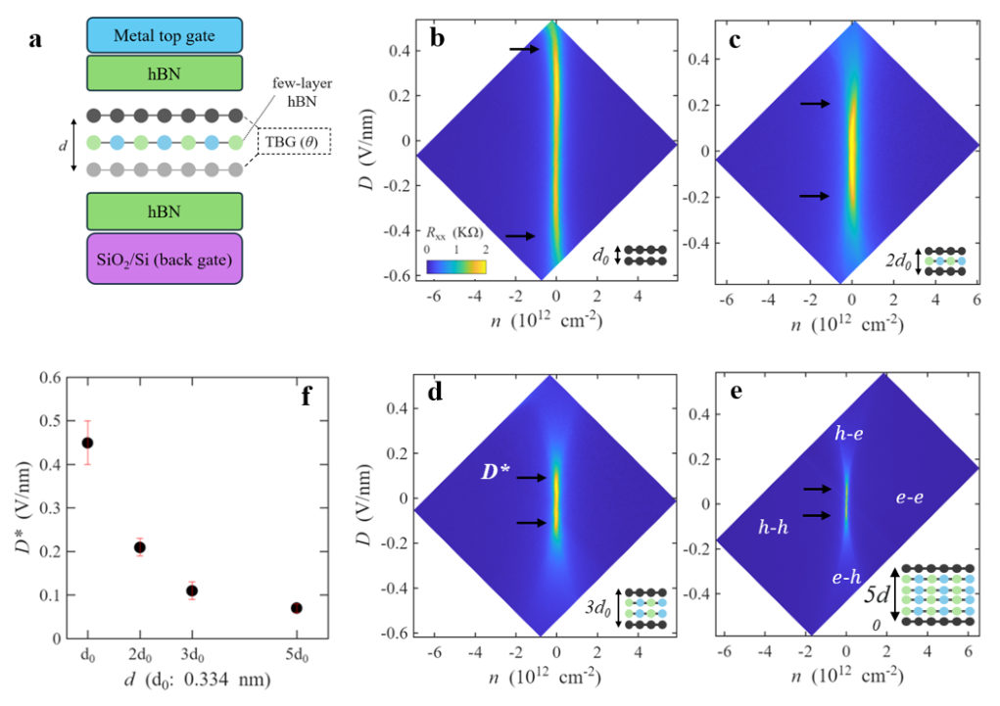
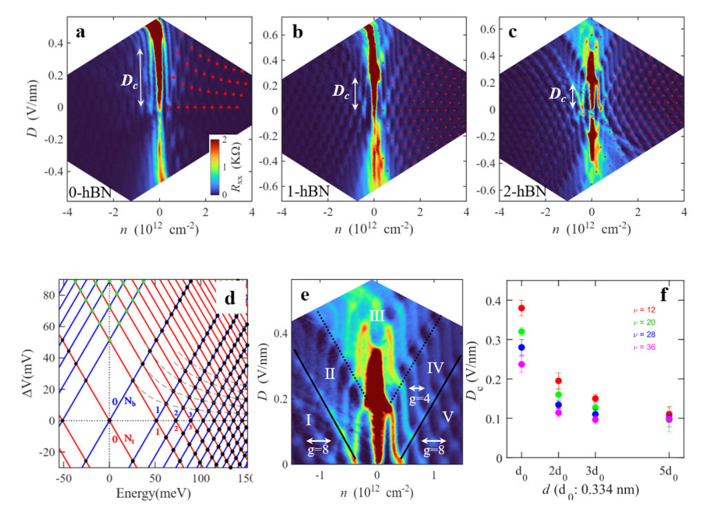
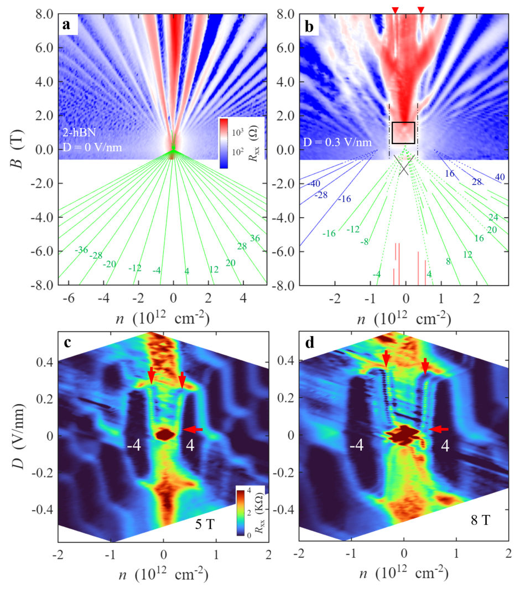
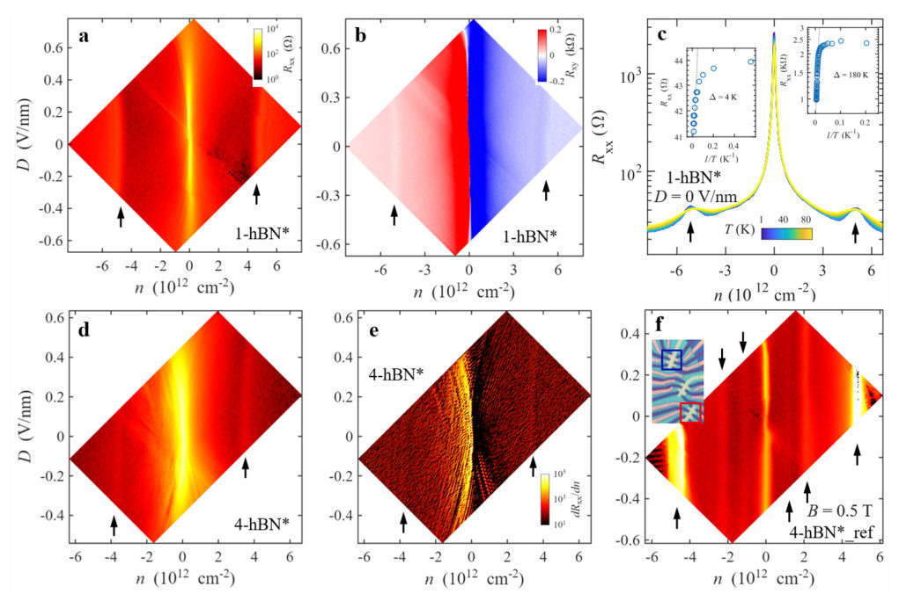
Summary. This work introduces a method to achieve atomic-layer-precise control over interlayer coupling in twisted bilayer graphene using hBN spacers. By systematically tuning the spacer thickness, the researchers demonstrated that interlayer interactions can be controlled, allowing for the study of moiré physics and correlated electronic states in a highly tunable platform.
Why it may be interesting. The ability to tune interlayer coupling via an engineered barrier (hBN) provides a clean, tunable platform to study correlated electron physics, mimicking the effects of varying material stacking or external strain in a highly controlled manner.
Main problem. The central goal is to understand and control interlayer coupling in van der Waals (vdW) materials to engineer novel electronic phenomena like correlated states and topological phases.
Main result. The authors demonstrated that by using atomically-precise hBN spacers, they can systematically tune the interlayer coupling, showing that the critical field for electron-hole bilayer behavior decreases as the spacer separation increases.
Method. The study uses dual-gated devices on twisted bilayer graphene (TBG) separated by varying thicknesses of hBN spacers, measuring longitudinal resistance ($R_{xx}$) as a function of carrier density and vertical displacement field.
Model / system. The physical system is TBG separated by hBN spacers, allowing for independent control over interlayer distance ($d$) and twist angle ($ heta$). The analysis involves modeling the potential difference ($\Delta V$) between layers and observing quantum transport signatures like Landau level crossings.
Key observables. Longitudinal resistance ($R_{xx}$), critical displacement field ($D^*$), Landau level crossings, and the emergence of electron-hole bilayer states.
Important parameters / regimes. Interlayer distance ($d$) controlled by hBN thickness, displacement field ($D$), and twist angle ($ heta$).
Assumptions / limitations. The analysis assumes that tuning the spacer thickness allows for independent control of the interlayer coupling strength, enabling systematic decoupling.
Figures summary. Figures illustrate device schematics, $R_{xx}$ vs. density/displacement field plots showing $D^*$ dependence on spacer thickness, and Landau fan diagrams detailing quantum oscillations and electron-hole state emergence.
Paper structure. The paper progresses by first establishing the method for atomic-scale control of interlayer coupling using hBN spacers. It then analyzes transport measurements ($R_{xx}$ vs. $D$) to quantify the coupling strength ($D^*$) and explores high-field magnetotransport to map out correlated electronic states.
Understanding and controlling interlayer coupling in van der Waals (vdW) materials is crucial for engineering novel electronic phenomena, including correlated states, topological phases, and superconductivity. Twisted bilayer graphene (TBG) offers a highly tunable platform to explore how interlayer orientation and separation influence quantum transport and moiré physics. Here, we introduce a method for achieving precise, atomic-scale control of interlayer coupling in TBG using dual-gated devices separated by ultrathin, thickness-tunable hBN spacers. This approach enables systematic control of interlayer interactions, demonstrating that the critical displacement field required for electron-hole bilayer behavior decreases as the layer separation increases at a fixed twist angle. Remarkably, at small twist angles, moiré-related side peaks persist even when layers are separated by tetralayers of hBN (approximately 1.3 nm), indicating robust interlayer band hybridization. By combining atomic-layer-precise control of interlayer coupling with independent twist angle tunability, our platform opens new avenues for discovering novel moiré physics governed by engineered interlayer coupling and moiré patterns.
Authors: Guowen Gong, Qianbiao Liu, Lijun Zhu
Type: both · Category: other · PDF: https://arxiv.org/pdf/2609.36489v1
Analysis basis: full PDF text, analyzed in chunks
Topic relevance: analog quantum simulation 2/5 · driven-dissipative phase transition 2/5 · non-equilibrium universality 2/5 · Keldysh / 2PI / non-Gaussian methods 1/5 · methods for driven-dissipative 1/5 · quantum measurements 1/5 · scars & prethermalization 1/5
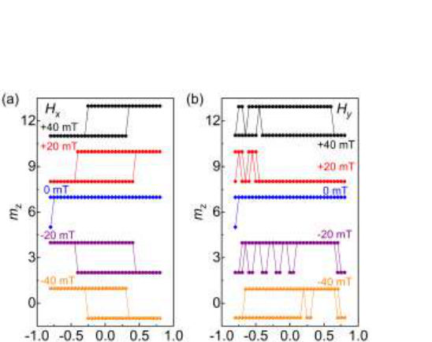
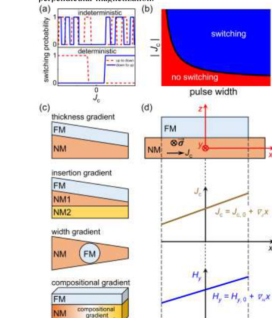
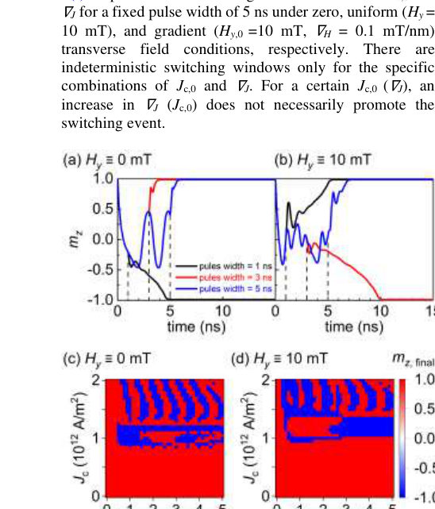
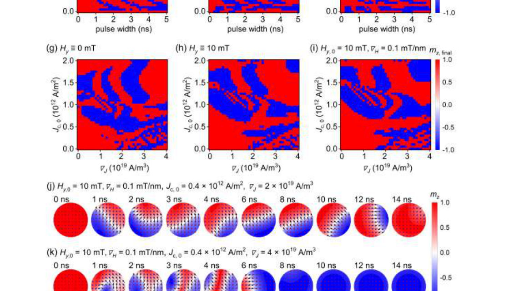
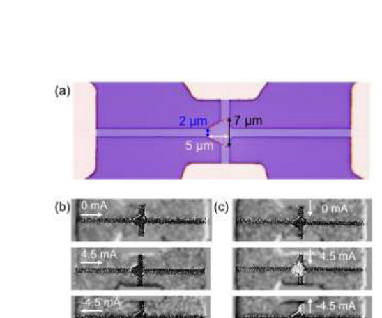
Summary. This work addresses the critical question of whether a longitudinal spin current gradient can substitute for an external longitudinal magnetic field to deterministically switch perpendicular magnetization in magnetic heterostructures. Through micromagnetic simulations and experiments, the authors demonstrate that gradients are insufficient, concluding that deterministic switching requires a longitudinal field or, alternatively, perpendicular spin components.
Why it may be interesting. While focused on spintronics, the analysis of non-equilibrium dynamics, phase transitions (switching), and the role of engineered gradients in controlling magnetization reversal shares conceptual overlap with understanding non-equilibrium dynamics in quantum many-body systems.
Main problem. The paper investigates whether a longitudinal spin current density gradient can replace the longitudinal magnetic field required for achieving deterministic spin-orbit torque (SOT) switching in perpendicular magnetic anisotropy (PMA) heterostructures.
Main result. The study concludes that any realistic longitudinal spin current density gradient is insufficient to enable deterministic switching, as the switching remains highly indeterministic and sensitive to device variations. Perpendicular spins are shown to be a much more effective mechanism for deterministic switching.
Method. The research combines micromagnetic simulations with experimental measurements on NM/FM bilayers to analyze magnetization dynamics under varying current and field conditions.
Model / system. The system under study is a normal metal/ferromagnet (NM/FM) bilayer exhibiting PMA. The dynamics are governed by spin-orbit torques derived from spin currents, considering both uniform and gradient components.
Key observables. Out-of-plane component of magnetization ($m_z$), switching probability, and the time-revolved evolution of $m_z$ during SOT switching.
Important parameters / regimes. Longitudinal spin current density gradient ($ abla j_s$), applied longitudinal magnetic field ($H_x$), and the pulse width ($ au$).
Assumptions / limitations. The analysis assumes that deterministic switching requires an effective longitudinal magnetic field, and the authors note that observed switching in literature might stem from mechanisms other than simple longitudinal spin current gradients.
Figures summary. Figures illustrate the schematics of gradient generation, the time-resolved evolution of $m_z$ under uniform vs. gradient currents, and phase diagrams showing the dependence of the final switching state on current density and gradient strength.
Paper structure. The paper establishes the open question regarding gradient replacement for $H_x$, presents micromagnetic simulations showing the failure of gradients to induce deterministic switching, and concludes with experimental evidence contrasting gradient effects with the superior performance of perpendicular spin generation.
It has remained a critical open question as to whether a longitudinal spin current gradient (e.g., due to a gradient in the thickness, composition, or width) can replace the longitudinal magnetic field required for deterministic spin-orbit torque switching of normal metal/ferromagnet heterostructures with perpendicular magnetic anisotropy. Here, we report robust micromagnetic and experimental evidence that any realistic longitudinal spin-current density gradient cannot be an effective replacement for a longitudinal magnetic field to enable deterministic switching of a perpendicular magnetic anisotropy device. Instead, the longitudinal spin current density can only modify the nucleation and pulse-timing-sensitive oscillations of magnetic domains and thus the picosecond-scale strip-like indeterministic switching windows. The same conclusions hold robustly when the transverse effective field associated with the spin-current pulse (the sum of the Oersted field and field-like torque) is taken into account. The indeterministic switching prevents applications in the presence of finite device-to-device variations and drifts in write current pulse and thermal fluctuations of device parameters. We also experimentally show that, instead of a longitudinal spin current density gradient, perpendicular spins are much more effective in deterministic switching of perpendicular spin torque devices.
Authors: Jie-Cheng Feng, Xinle Cheng, Itai Keren, Dante M. Kennes, Abhay N. Pasupathy, Dmitri N. Basov, Emil Vinas Bostrom, Angel Rubio
Type: theory · Category: other · PDF: https://arxiv.org/pdf/2609.37182v1
Analysis basis: full PDF text, analyzed in chunks
Topic relevance: Keldysh / 2PI / non-Gaussian methods 2/5 · correlated / nonlocal dissipation 1/5 · driven-dissipative phase transition 1/5 · methods for driven-dissipative 1/5 · quantum measurements 1/5
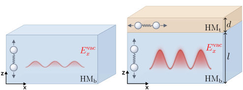
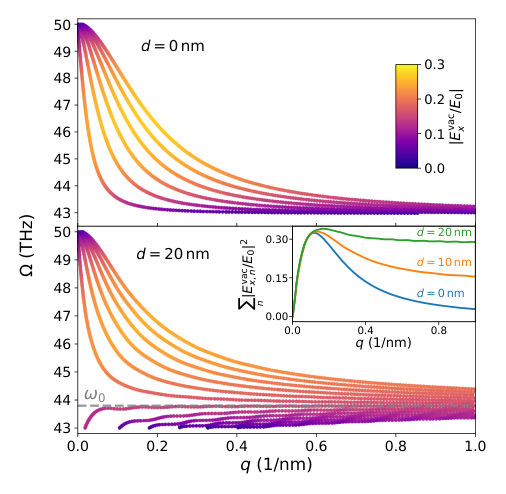
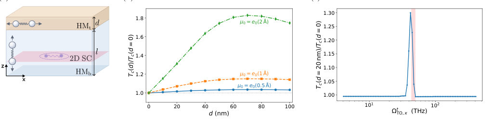
Summary. This paper proposes using hyperbolic heterostructures to actively engineer the vacuum electromagnetic field deep within a material. By placing a thin overlayer, researchers can reshape the vacuum fluctuations, which is then shown to remotely tune the superconducting critical temperature of an embedded 2D layer. This suggests a novel, on-chip route for controlling quantum material properties via vacuum field engineering.
Why it may be interesting. This work directly addresses the engineering of vacuum fields in structured media, which is a key area in quantum optics and open quantum systems, providing a mechanism for long-range, non-local control over material properties.
Main problem. The challenge is to engineer and control the quantum vacuum fluctuations deep inside a material structure, moving beyond surface-level control.
Main result. A thin overlayer with opposite hyperbolicity can remotely reshape the vacuum field inside a hyperbolic material, which in turn can modify the critical temperature of an embedded superconductor.
Method. The study uses theoretical modeling involving the hybridization of hyperbolic polariton modes and applies Eliashberg theory to analyze the superconducting response.
Model / system. The system is a hyperbolic heterostructure composed of a bottom hyperbolic material (HMb) and a thin overlayer (HMt). The physics is governed by the coupling between the vacuum field and matter excitations, such as phonons or superconducting pairs.
Key observables. Vacuum fluctuations of the in-plane electric field ($\langle E_{2x} angle_{vac}$) and the superconducting critical temperature ($T_c$).
Important parameters / regimes. The degree of overlap between the hyperbolic bands of the two materials, and the thickness of the overlayer.
Assumptions / limitations. The analysis simplifies quantization by neglecting the damping term, and the model is not intended as a quantitative description of specific experiments.
Figures summary. Figures illustrate the directional control of vacuum fluctuations, showing enhancement of the in-plane field when capped by HMt, and demonstrate that $T_c$ changes only when the hyperbolic bands overlap.
Paper structure. The paper establishes the problem of vacuum control, models the hyperbolic heterostructure, calculates the field modification via mode hybridization, and applies this control mechanism to predict changes in superconductivity using Eliashberg theory.
Vacuum fluctuations can be engineered using optical cavities, resonators, and surface-polaritonic modes, but extending such control deep inside a material remains challenging.Here we show that the vacuum field inside a hyperbolic material can be reshaped by a much thinner overlayer with opposite hyperbolicity.This effect requires overlap between the hyperbolic bands of the two materials and modifies the coupling between the vacuum field and matter excitations within the bottom material, without changing its intrinsic dielectric properties. As an application, we use Eliashberg theory to study a two-dimensional superconducting layer inside the bottom material, showing that the overlayer can remotely change its critical temperature.Our results may shed light on recent experiments reporting changes in superconductivity arising from a frequency-matched hyperbolic overlayer, and suggest an on-chip route to long-range control of matter excitations and collective material properties.
Authors: L. E. Sosa-Arias, A. Martín-Ruiz
Type: theory · Category: other · PDF: https://arxiv.org/pdf/2609.36664v1
Analysis basis: full PDF text, analyzed in chunks
Topic relevance: analog quantum simulation 2/5 · Keldysh / 2PI / non-Gaussian methods 1/5 · methods for driven-dissipative 1/5
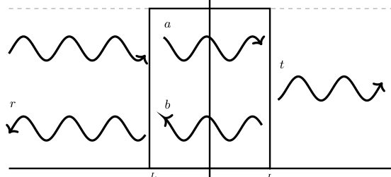
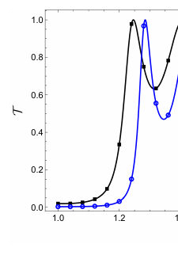
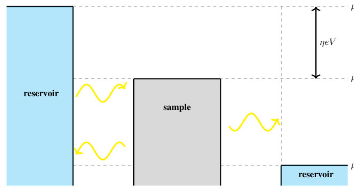
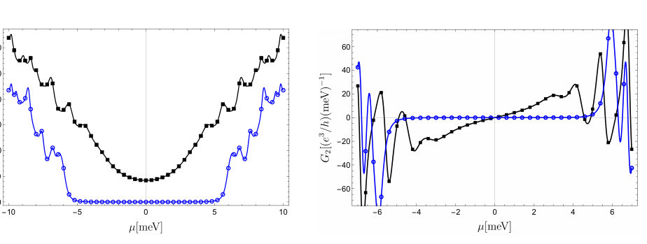
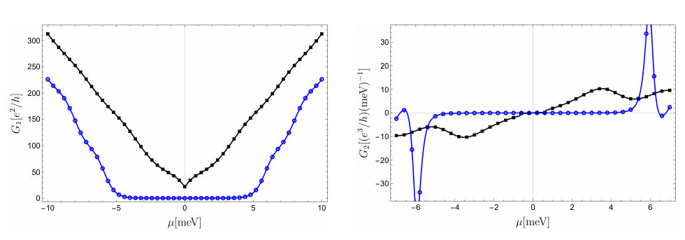
Summary. This paper theoretically analyzes charge transport in topological nodal-line semimetals through a finite barrier. It shows that the nodal topology protects Klein tunneling at normal incidence and derives expressions for linear and nonlinear conductances. The findings highlight that nonlinear Hall currents are a key signature of the nodal topology when $\mathcal{PT}$-symmetry is broken.
Why it may be interesting. The study of topological transport phenomena, especially those involving Berry curvature and non-trivial boundary conditions, provides rich theoretical analogues for understanding quantum transport in engineered mesoscopic systems, which is relevant to open quantum systems.
Main problem. The study investigates the linear and nonlinear charge transport responses across topological nodal-line semimetals (NLSMs) when subjected to a finite electrostatic barrier.
Main result. The work demonstrates the persistence of Klein-tunneling behavior at normal incidence, protected by the nodal topology, and reveals that nonlinear Hall currents emerge upon breaking $\mathcal{PT}$-symmetry.
Method. The analysis employs the Landauer-Büttiker formalism to derive general expressions for conductances, solving the corresponding quantum scattering problem across the barrier.
Model / system. The system is a 3D topological nodal-line semimetal, modeled by a two-band Hamiltonian that is perturbed by a symmetry-breaking mass term ($m\sigma_z$). The transport is analyzed across a barrier potential $V(z)$.
Key observables. Transmission probability $T(E, k_\perp)$, linear and nonlinear conductances (longitudinal and Hall components), and the Berry curvature $\Omega_s(\mathbf{k})$.
Important parameters / regimes. Barrier height ($V_0$), barrier width ($L$), temperature ($T$), and the $\mathcal{PT}$-breaking mass term ($m$).
Assumptions / limitations. The analysis assumes a coherent ballistic transport regime and focuses on the normal-incidence channel for Klein tunneling protection.
Paper structure. The paper progresses by first establishing the model Hamiltonian and the scattering problem, then deriving the transmission probability, and finally applying the Landauer-Büttiker formalism to calculate the nonlinear transport responses.
Topological nodal-line semimetals are three-dimensional quantum materials characterized by band crossings that form closed loops in momentum space. In $\mathcal{PT}$-symmetric realizations, these nodal rings are stabilized in the absence of spin-orbit coupling, giving rise to drumhead surface states and unconventional transport responses. In this work, we study charge transport across a nodal-line semimetal containing a finite electrostatic barrier, with both leads described by the same equilibrium material. By solving the corresponding scattering problem, we show that the transmission across the barrier exhibits {Klein-tunneling behavior protected at normal incidence by the nodal topology}, despite the extended nodal-line dispersion, which can be traced back to Berry-curvature-induced momentum locking. Using the Landauer-Büttiker formalism, we derive general expressions for the linear and nonlinear conductances, including both longitudinal and Hall components, and evaluate them at zero and finite temperature. Our analytical and numerical results elucidate the dependence of the conductance on barrier height and width, as well as on a $\mathcal{PT}$-breaking mass term. We identify distinct transport regimes in which nonlinear contributions are strongly enhanced and transverse Hall currents emerge, providing clear transport signatures of nodal-line topology and suggesting potential routes toward device applications.
Authors: Alejandro Toral-Lopez, Michele Virgilio, Gianluca Fiori, Damiano Marian
Type: theory · Category: other · PDF: https://arxiv.org/pdf/2609.37823v1
Analysis basis: full PDF text, analyzed in chunks
Topic relevance: Keldysh / 2PI / non-Gaussian methods 2/5 · methods for driven-dissipative 1/5 · quantum measurements 1/5
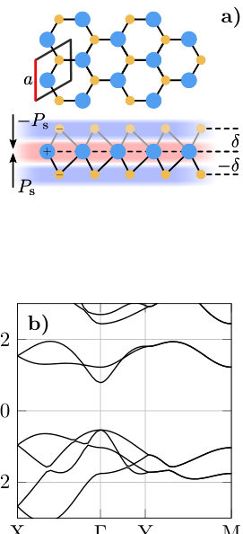
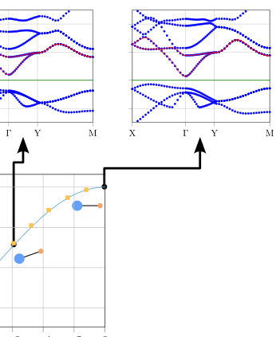
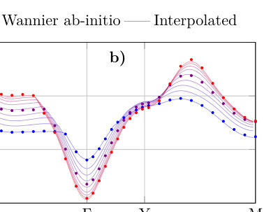
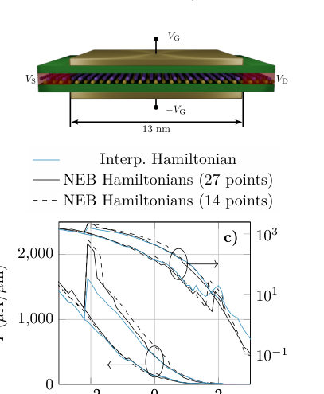
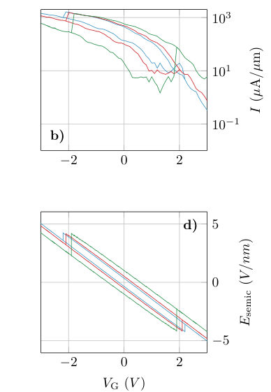
Summary. This work presents a multiscale simulation framework to model 2D ferroelectric field-effect transistors using InP. It bridges DFT calculations with NEGF transport by creating a continuous, polarization-dependent Hamiltonian. This advanced methodology successfully predicts key device behaviors, such as memory windows and hysteresis, by self-consistently coupling electronic transport to the material's structural polarization state.
Why it may be interesting. While focused on solid-state electronics, the methodology of coupling structural dynamics (polarization) directly into the electronic Hamiltonian ($\hat{H}(P)$) is a sophisticated example of open quantum system modeling, where the environment (the lattice/dipole) dictates the system's Hamiltonian.
Main problem. The core problem is developing accurate, predictive multiscale simulations to model the performance of next-generation 2D ferroelectric field-effect transistors (FeFETs). This requires bridging atomic-scale physics with device-level electronic transport.
Main result. The authors successfully developed a multiscale framework that captures the dynamic interplay between ion movement (polarization switching) and electronic transport, naturally reproducing key device signatures like hysteresis loops.
Method. The approach combines first-principles Density Functional Theory (DFT) calculations with Non-Equilibrium Green's Function (NEGF) transport solvers. A key innovation is creating a continuous, polarization-dependent Hamiltonian that evolves self-consistently with the Poisson equation.
Model / system. The system studied is a 2D ferroelectric monolayer, using Indium Phosphide (InP) as a case study. The model uses a continuous Hamiltonian $\hat{H}(P)$ derived by interpolating parameters across the ferroelectric phase transition path.
Key observables. Transfer characteristics ($I_{DS}$ vs $V_G$), memory window, hysteresis loops, spontaneous polarization ($P_s$), and coercive field ($E_c$).
Important parameters / regimes. Spontaneous polarization ($P_s = 11.52 \text{ pC/m}$), Bandgap ($E_g = 1.34 \text{ eV}$), Coercive field ($E_c = 4.18 \text{ V/nm}$).
Assumptions / limitations. The framework assumes the polarization vector is strictly out-of-plane (along the y-axis) and that the continuous interpolation accurately captures the physics between discrete DFT snapshots.
Figures summary. Figures illustrate the atomic structure, the ferroelectric energy landscape (double-well potential), the relationship between polarization and internal field, and the comparison of transport results using interpolated versus discrete Hamiltonians.
Paper structure. The paper progresses by first establishing the need for multiscale modeling, detailing the DFT/NEB calculations to map the polarization path, developing the continuous Hamiltonian interpolation, and finally embedding this into a self-consistent Poisson-NEGF solver to predict device I-V curves.
Ferroelectric materials are highly attractive for low-power, high-speed electronics and emerging neuromorphic computing architectures. However, the severe physical scaling limits of conventional bulk (3D) ferroelectrics at the nanoscale have shifted attention towards two-dimensional (2D) ferroelectric monolayers. Accurate device-level performance predictions are essential to accelerate the experimental testing and screening of these novel materials. In this work, we present a multiscale simulation framework that bridges first-principles density functional theory with Non-Equilibrium Green's Function (NEGF) transport calculations. Using a 2D Indium Phosphide monolayer as a case study, our approach leverages a continuously interpolated, polarization-dependent Hamiltonian embedded within a self-consistent Poisson-NEGF solver. The model captures the dynamic interplay between ion movement and electronic transport, naturally reproducing macroscopic hysteresis loops and memory windows without empirical parameters. This predictive pipeline provides a computationally efficient tool to evaluate and optimize next-generation 2D ferroelectric field-effect transistors.
Authors: Xiaoxun Gong, Zechen Tang, Woochang Kim, Yang Li, Wenhui Duan, Yong Xu, Steven G. Louie
Type: theory · Category: numerical methods · PDF: https://arxiv.org/pdf/2609.36962v1
Analysis basis: full PDF text, analyzed in chunks
Topic relevance: analog quantum simulation 2/5
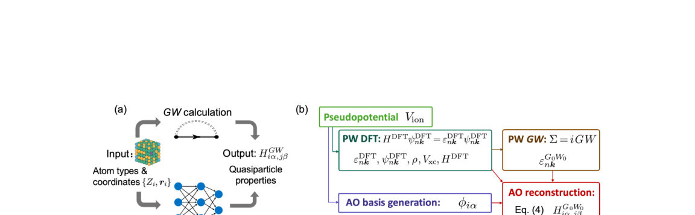
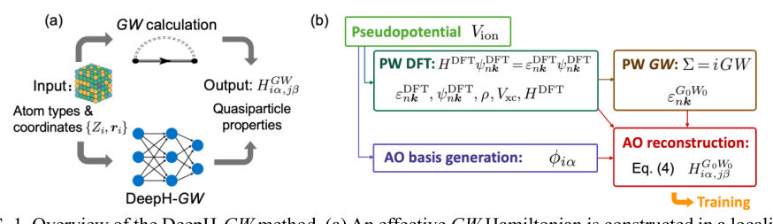
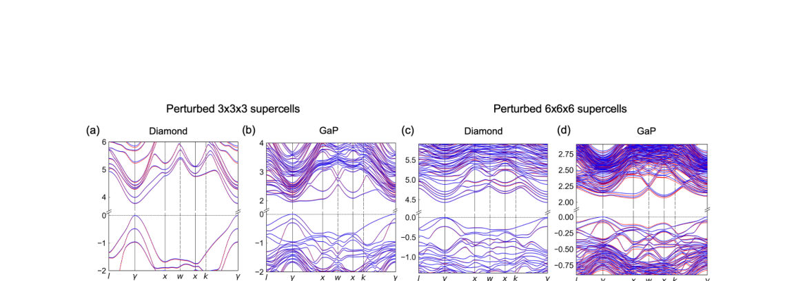
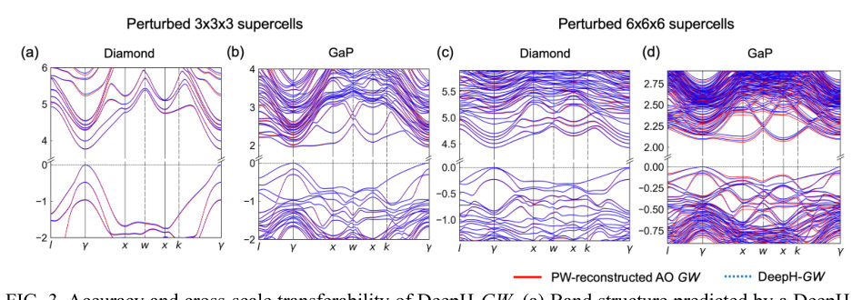
Summary. This paper presents DeepH-GW, a novel deep-learning framework designed to calculate accurate quasiparticle electronic structures by predicting the effective GW Hamiltonian directly from atomic structure. By combining the accuracy of plane-wave GW calculations with the efficiency of neural network inference, it achieves near-DFT accuracy at a much larger scale. This breakthrough provides a practical foundation model for simulating complex, many-body excited-state properties in materials.
Why it may be interesting. While focused on condensed matter electronic structure, the core methodology—using deep learning to create a linear-scaling, highly accurate surrogate model for a complex many-body Hamiltonian (GW)—is a powerful general technique applicable to modeling Hamiltonians in AMO physics or open quantum systems.
Main problem. The primary challenge is developing a computationally efficient method to calculate accurate quasiparticle electronic structures, which are foundational for understanding excited-state properties, while overcoming the high computational cost of standard first-principles GW calculations for large systems.
Main result. The DeepH-GW framework successfully reproduces GW-level quasiparticle band structures with errors on the order of a few meV and demonstrates strong cross-scale transferability to large supercells.
Method. The authors introduce DeepH-GW, a deep-learning framework that predicts the effective GW quasiparticle Hamiltonian directly from the atomic structure, trained on high-fidelity plane-wave GW calculations.
Model / system. The method targets the effective GW quasiparticle Hamiltonian, which is constructed in a localized Atomic Orbital (AO) basis set. It bridges the systematic accuracy of plane-wave (PW) methods with the linear-scaling inference speed of neural networks.
Key observables. Quasiparticle band structures, band gaps, and temperature-dependent electron-phonon band-gap renormalization.
Important parameters / regimes. Errors on the order of a few meV; transferability from small training structures to substantially larger supercells.
Assumptions / limitations. The framework assumes that the static GW effective self-energy is sufficiently short-ranged (nearsighted) to be captured by local message-passing architectures, though long-range interactions require careful handling.
Figures summary. Figures illustrate the workflow, showing the reconstruction of the AO effective GW Hamiltonian from PW data, and comparing predicted band structures and temperature-dependent band gaps against reference calculations and experimental data.
Paper structure. The paper outlines the necessity of GW calculations, introduces the DeepH-GW architecture, details the training process using PW GW data to reconstruct the Hamiltonian in an AO basis, validates the accuracy and transferability across different system sizes, and finally demonstrates its application to temperature-dependent phenomena like electron-phonon coupling.
Accurate quasiparticle electronic structures are the foundation for understanding excited-state properties of materials and explaining optoelectronic, quantum, and transport phenomena. First-principles GW calculations nevertheless remain computationally intensive for large or configurationally complex systems. Here we introduce DeepH-GW, a deep-learning framework that predicts an effective GW quasiparticle Hamiltonian directly from atomic structure. Building on the local, equivariant message-passing architecture of DeepH, DeepH-GW is trained on high-fidelity plane-wave GW calculations through a real-space Hamiltonian-reconstruction interface. This approach combines the systematic accuracy and broad chemical applicability of plane-wave methods with linear-scaling neural-network inference. Across the systems examined, DeepH-GW reproduces quasiparticle band structures with errors on the order of a few meV. Moreover, we show that, despite the intrinsic nonlocality of many-body interactions, DeepH-GW exhibits strong cross-scale transferability from relatively small training structures to substantially larger supercells. We demonstrate that the framework can accurately capture GW-level electron-phonon band-gap renormalization through predictions in supercells with thermal displacements, illustrating the power of the approach. DeepH-GW therefore provides a practical route toward large-scale many-body simulations and foundation models for excited-state electronic structure.
Authors: Rundong Ma, Konstantin Davydov, Liuxin Gu, Lifu Zhang, Hassan Alnatah, Beini Gao, Ruihao Ni, Suji Park, Houk Jang, Takashi Taniguchi, Kenji Watanabe, You Zhou
Type: experiment · Category: other · PDF: https://arxiv.org/pdf/2609.38033v1
Analysis basis: full PDF text, analyzed in chunks
Topic relevance: quantum measurements 2/5
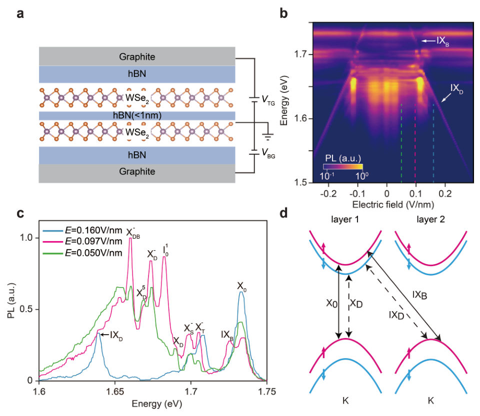
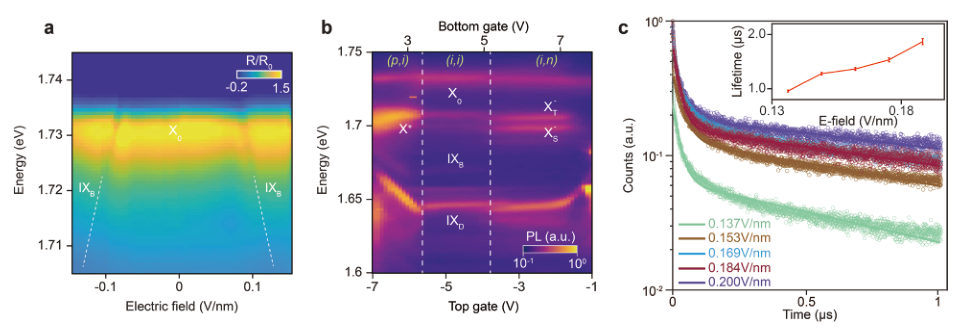
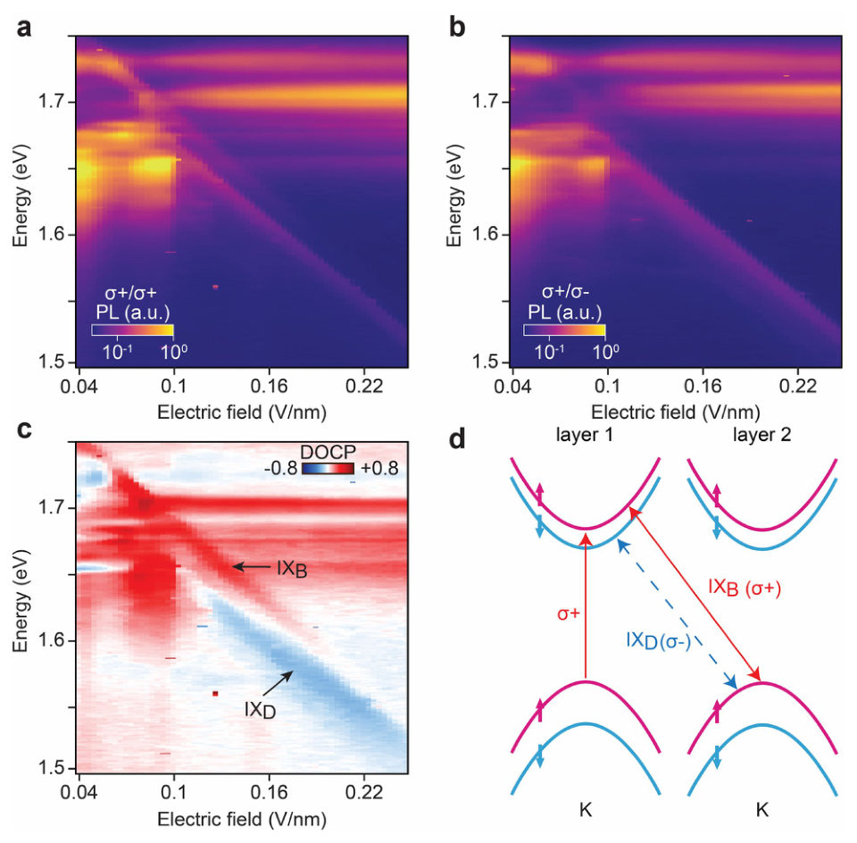
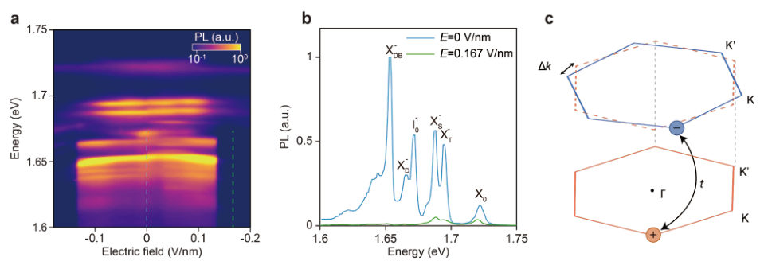
Summary. This work reports the direct spectroscopic identification of bright (singlet) and dark (triplet) interlayer excitons in $ ext{WSe}_2/ ext{hBN}/ ext{WSe}_2$ heterostructures. By using electric-field and time-resolved measurements, the authors confirmed that the dark excitons are long-lived and retain valley polarization. These findings offer critical control mechanisms for excitonic many-body physics and optoelectronic applications.
Why it may be interesting. The ability to spectroscopically separate and characterize spin-forbidden dark excitons alongside their bright counterparts provides fundamental insights into spin-valley locking and exciton dynamics, which are crucial for designing next-generation quantum emitters.
Main problem. The primary challenge is the unambiguous spectroscopic identification of spin-singlet (bright) versus spin-triplet (dark) interlayer excitons (IXs) in TMD heterostructures, as this spin state dictates population and transport.
Main result. The authors spectroscopically identified two distinct, momentum-direct interlayer transitions ($ ext{IXB}$ and $ ext{IXD}$) with opposite spin configurations, demonstrating that the dark excitons ($ ext{IXD}$) possess ultralong lifetimes and retain strong valley polarization.
Method. The study employed electric-field-dependent photoluminescence and reflectance measurements, alongside time-resolved and polarization analyses.
Model / system. The research uses high-quality, dual-gated $ ext{WSe}_2/ ext{hBN}/ ext{WSe}_2$ homobilayers to study interlayer excitons formed between adjacent TMD layers.
Key observables. Two distinct interlayer transitions ($ ext{IXB}$ and $ ext{IXD}$), opposite circular helicities, ultralong lifetimes (microseconds for $ ext{IXD}$), and field-dependent spectral shifts.
Important parameters / regimes. Interlayer splitting ($\sim 19 ext{ meV}$), electric field strength, and the twist angle between the TMD layers.
Assumptions / limitations. The analysis assumes that the observed splitting is due to a combination of spin-orbit coupling, binding energy differences, and exchange interaction.
Figures summary. Figures show field-dependent PL revealing both $ ext{IXB}$ and $ ext{IXD}$; reflectance confirms $ ext{IXB}$ absorption but not $ ext{IXD}$ absorption; and TRPL demonstrates the microsecond lifetime of $ ext{IXD}$ compared to $ ext{IXB}$.
Paper structure. The paper progresses by first establishing the existence of two distinct IX species via field-dependent spectroscopy, then characterizing their differing dynamics (lifetime, polarization) using time-resolved measurements, and finally demonstrating external control over these states using twist-angle modulation.
Interlayer excitons in transition metal dichalcogenide (TMD) heterostructures exhibit long lifetimes and long-range transport, making them promising for excitonic devices and quantum many-body phases, such as Bose-Einstein condensates. Achieving these goals requires a precise understanding of spin-allowed bright and nominally spin-forbidden dark excitons, because the lowest-energy exciton species governs population, transport, and condensation. Despite substantial progress, unambiguously distinguishing singlet and triplet interlayer excitons has been challenging, as moiré excitons in these heterostructures can mimic their optical signatures. Here, we report the direct spectroscopic identification of bright (singlet) and dark (triplet) interlayer excitons in high-quality, dual-gated WSe$_2$/hBN/WSe$_2$ homobilayers. Electric-field-dependent photoluminescence and reflectance reveal two momentum-direct interlayer transitions with distinct spin configurations. The interlayer dark excitons obey selection rules that differ from those of bright excitons. Strikingly, interlayer dark excitons retain strong valley polarization, even with their ultralong lifetime exceeding microseconds. Finally, we demonstrate twist-angle control, wherein twist-induced electron-hole momentum mismatch modulates interlayer exciton emission. These results provide critical insights into the electronic and excitonic structure of TMD heterostructures, opening new avenues for excitonic many-body physics and optoelectronic devices.
Authors: A. Fétida, R. Robles, F. Scheurer, M. Romeo, J. Kröger, N. Lorente, L. Limot
Type: both · Category: strongly correlated electrons · PDF: https://arxiv.org/pdf/2609.37299v1
Analysis basis: full PDF text, analyzed in chunks
Topic relevance: Keldysh / 2PI / non-Gaussian methods 1/5 · analog quantum simulation 1/5 · quantum measurements 1/5
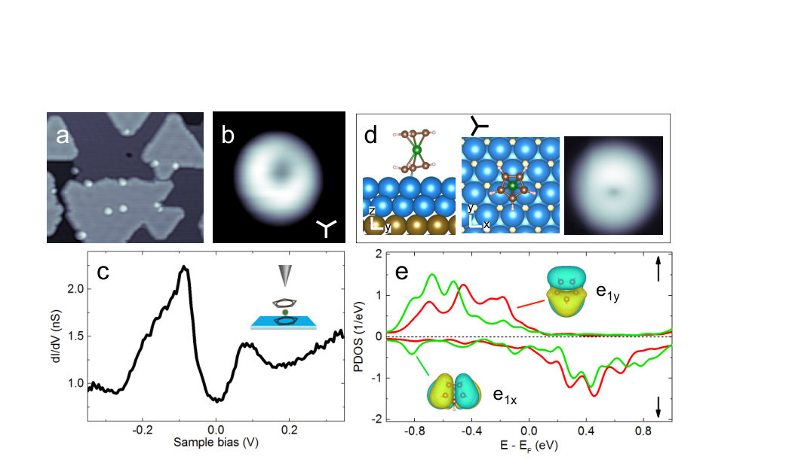
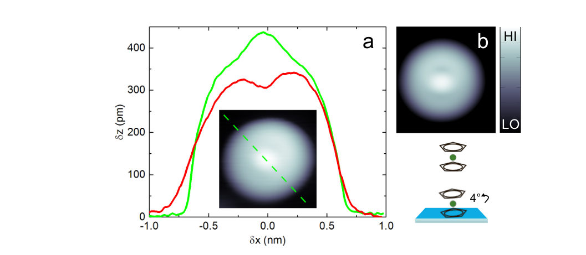
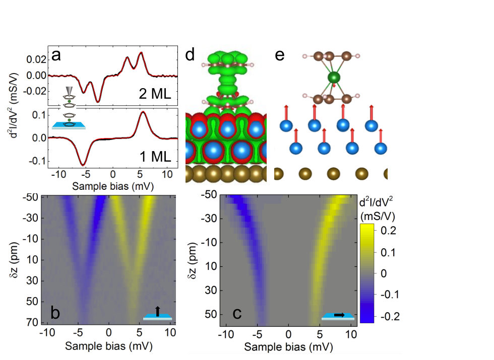
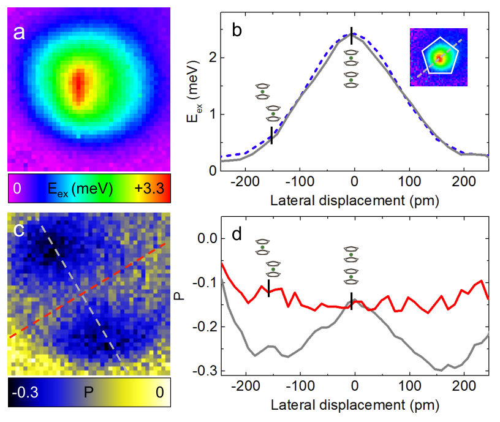
Summary. This work experimentally and theoretically links charge transport, magnetic exchange, and spin polarization in molecular junctions using STM. By simultaneously mapping these three quantities, the authors demonstrate that while conductance and exchange coupling follow similar spatial rules governed by hopping, the spin polarization is highly sensitive to the specific orbital structure of the junction. This establishes a fundamental, real-space understanding of spin transport in molecular magnets.
Why it may be interesting. The direct, real-space measurement and theoretical linkage between charge transport (conductance) and magnetic coupling (exchange/spin polarization) in molecular junctions provides a powerful experimental realization of correlated electron physics in nanoscale systems.
Main problem. To establish a real-space connection between tunneling, exchange, and spin transport in magnetically coupled molecules.
Main result. The study shows that conductance and exchange coupling share similar spatial dependencies, suggesting both are governed by the same hopping matrix, while spin polarization depends on the specific orbital composition.
Method. The researchers used STM spectroscopy to simultaneously extract junction conductance, exchange coupling, and spin polarization from a single dataset, complemented by DFT calculations.
Model / system. The system involves an exchange-coupled molecular junction formed between a single molecule functionalized on an STM tip and a second molecule adsorbed on a ferromagnetic surface (e.g., Co islands). The physics is modeled using a minimal Hubbard description for the molecular interaction.
Key observables. Junction conductance, exchange coupling strength ($E_{ex}$), and spin polarization ($P$) mapped spatially across the junction.
Important parameters / regimes. The hopping matrix elements between molecular frontier orbitals, which dictate the coupling strength and transport channels.
Assumptions / limitations. The analysis assumes a minimal Hubbard description governs the coupling, and the conductance calculation employs Bardeen’s tunneling formalism.
Figures summary. Figures illustrate STM images, simulated conductance maps, spin-excitation spectra showing characteristic splittings, and spatial maps detailing the variation of exchange energy and spin polarization across the junction.
Paper structure. The paper progresses by characterizing the physical setup (molecular junction), measuring multiple correlated quantities (G, $E_{ex}$, P) from one dataset, relating their spatial dependencies to a common underlying hopping mechanism, and finally detailing how orbital composition dictates the measured spin polarization.
Spin transport between coupled spins is governed by tunneling and exchange interactions, yet their microscopic relation in real space has remained experimentally elusive. To address this, we functionalize the tip of a scanning tunneling microscope with a single molecule and use it as a movable spin sensor positioned above a second molecule on a ferromagnetic surface, forming an exchange-coupled molecular junction. From the same spectroscopic dataset, we independently extract the junction conductance, exchange coupling, and spin polarization with atomic-scale resolution. Conductance and exchange display nearly identical spatial dependences, consistent with a minimal Hubbard description in which both are governed by the same hopping matrix between the molecular frontier orbitals. In contrast, the spin polarization depends on the orbital composition and the relative weight of the resulting transport channels. These results establish a real-space connection between tunneling, exchange, and spin transport in magnetically coupled molecules.
Authors: A. V. Larionov, A. V. Gorbunov, A. B. Van'kov, D. A. Shchigarev, L. V. Kulik, V. Umansky
Type: experiment · Category: strongly correlated electrons · PDF: https://arxiv.org/pdf/2609.36036v1
Analysis basis: full PDF text, analyzed in chunks
Topic relevance: analog quantum simulation 1/5 · correlated / nonlocal dissipation 1/5 · quantum optics experiment 1/5
Summary. This paper reports the experimental detection of a 'magnetoplasmon molecule,' a complex four-particle excitation in a 2DES under a magnetic field. Using low-temperature photoluminescence spectroscopy, the authors analyze spectral features and pump-power dependencies to confirm the existence of this bound state. The findings advance the understanding of strongly correlated electron dynamics in quantum Hall systems.
Why it may be interesting. This work bridges concepts from strongly correlated electron physics (high-density electron systems, excitons) with collective excitations (plasmons), offering experimental validation of complex, multi-particle bound states in quantum Hall systems.
Main problem. The study investigates the formation and properties of a novel intrinsic four-particle excitation, termed a magnetoplasmon molecule, within a two-dimensional electron system subjected to a strong external magnetic field.
Main result. The authors report the experimental observation of this hybrid magnetoplasmon molecule, characterized by specific spectral features and distinct power-law dependencies in the photoluminescence intensity.
Method. The research employs spectroscopic measurements (Photoluminescence, PL) on a high-quality GaAs/AlGaAs quantum well, analyzing energy-loss spectra derived from photoexcited carrier recombination.
Model / system. The physical system is a 2DES in a quantum well under a magnetic field, involving quasi-equilibrium ensembles of Cyclotron Spin-Flip Excitons (CSFEs). The molecule itself is a four-particle complex consisting of two electrons and two Fermi holes.
Key observables. PL spectra showing distinct molecular ($ ext{Mpm}$), plasmaron ($ ext{Pln}$), and trion ($ ext{T}$) features; superlinear/linear dependence of PL intensity on pump power ($I_{ ext{pump}}$); and energy-loss features exceeding single magnetoplasmon energies.
Important parameters / regimes. Low temperatures ($T \approx 400-600 ext{ mK}$); low electron density ($n_e = 2 imes 10^{11} ext{ cm}^{-2}$); and varying excitation spot sizes ($ ext{dpump} \approx 10 ext{ µm}$ for molecular state observation).
Assumptions / limitations. The analysis assumes the system operates in the single-excitation limit for certain measurements, and the theoretical description relies on modeling the interaction between the molecule and the CSFE condensate.
Figures summary. Figures illustrate PL spectra showing molecular/plasmaron/trion features, energy-loss spectra comparing calculated DOS to experiment, and PL intensity dependence on pump power, particularly noting the transition from quadratic to linear dependence upon condensate formation.
Paper structure. The paper progresses by first establishing the theoretical basis for the hybrid molecule, then detailing the experimental setup and measurement techniques using PL spectroscopy, and finally presenting evidence through power-law analysis and spectral feature identification to confirm the molecule's existence and its interaction with the CSFE condensate.
We investigate a two-dimensional electron system in an external magnetic field. An intrinsic four-particle excitation of the electron system, which we term a magnetoplasmon molecule, is observed. The molecule comprises two identical electrons and two Fermi holes with opposite spins. Both electrons and one Fermi hole participate in the collective plasma oscillations of the electron system, whereas the second Fermi hole neutralizes the excess electronic charge. We examine the interaction between the magnetoplasmon molecule and a magnetoexciton condensate.
Authors: Mathieu Lafarie, Sarah Dadouch, Fréderic Miserque, Yunlin Zheng, Jocelyne Leroy, Mohamed Belhaj, Thomas Proslier
Type: experiment · Category: other · PDF: https://arxiv.org/pdf/2609.36919v1
Analysis basis: full PDF text, analyzed in chunks
Topic relevance: analog quantum simulation 1/5 · driven-dissipative phase transition 1/5 · quantum measurements 1/5
Summary. This paper reports on the synthesis and characterization of MgZnO multilayers using Atomic Layer Deposition to control surface electronic properties. By creating heterostructures, the researchers successfully demonstrated a method to independently tune both the secondary electron emission yield (TEEY) and the electrical conductivity. This work offers a rational design pathway for functional surfaces critical for high-vacuum electronic applications.
Why it may be interesting. While the focus is on classical vacuum electronics, the control over surface electronic properties (TEEY) via engineered interfaces and composition gradients is analogous to controlling boundary conditions or surface states in quantum systems.
Main problem. The primary goal is to mitigate performance degradation in vacuum RF systems, such as multipacting, which is caused by secondary electron emission (SEE) from material surfaces.
Main result. The study demonstrates that using MgZnO multilayers synthesized via ALD allows for the independent and systematic tuning of both the Total Electron Emission Yield (TEEY) and the electrical conductivity.
Method. The researchers synthesized and characterized MgZnO heterostructures using Atomic Layer Deposition (ALD) and measured TEEY and conductivity using electron guns and 4-point measurements.
Model / system. The physical system is MgZnO multilayer thin films deposited on a substrate using ALD. The structure is controlled by varying the number of $ ext{ZnO}$ and $ ext{MgO}$ ALD cycles, creating heterostructures.
Key observables. Total Electron Emission Yield (TEEY), electrical conductivity, chemical composition (Zn ratio), and structural phases ($ ext{ZnO}$-type vs. $ ext{MgO}$-type microstructure).
Important parameters / regimes. ALD cycle counts, electron beam energy (1 eV - 2 keV), and the resulting Zn ratio (e.g., 100% to 27%).
Assumptions / limitations. The authors assume that the combination of TEEY and conductivity achieved through heterostructuring is superior to what can be achieved in single-phase materials.
Figures summary. Figures illustrate the correlation between TEEY and structural transitions (e.g., Figure 3), and show how conductivity and TEEY vary with composition and strain (e.g., Figure 12).
Paper structure. The paper systematically presents the fabrication process (ALD), followed by detailed characterization of structure (XRR, XRD), composition (XPS), and finally, the measurement and correlation of the key electronic properties (TEEY and conductivity) across different multilayer compositions.
Secondary electron emission (SEE), arising from the interaction of energetic electrons with material surfaces, can induce deleterious effects in vacuum radio-frequency (RF) systems, notably multipacting, thereby degrading performance and threatening device integrity. Despite extensive efforts, effective and widely adopted mitigation strategies remain limited. Here, we report an approach to simultaneously tailor SEE and electrical conductivity using nanometric multi-element multilayers deposited by atomic layer deposition (ALD). The design and fabrication of these heterostructures are presented, and a range of films is systematically characterized to establish correlations between emission properties, electrical conductivity, chemical and structural features. We demonstrate that such heterostructures enable combinations of total electron emission yield (TEEY) and conductivity unattainable in single-phase materials, including regimes combining high TEEY with relatively high conductivity and low TEEY with low conductivities. These results open new avenues for the rational design of functional surfaces for vacuum electronic applications.
Authors: Cameron Scott, Jorge Íñiguez-González
Type: theory · Category: other · PDF: https://arxiv.org/pdf/2609.36871v1
Analysis basis: full PDF text, analyzed in chunks
Topic relevance: Keldysh / 2PI / non-Gaussian methods 1/5 · analog quantum simulation 1/5
Summary. This work proposes 'orientation engineering' as a powerful, general design strategy for ferroelectric materials, showing it can induce 'trans-switching'—where polarization switches perpendicular to the applied field. By analyzing the free energy landscape based on the film's growth direction, the authors predict novel functionalities in common ferroelectrics, opening pathways for advanced 3D device architectures.
Why it may be interesting. While focused on ferroelectrics, the concept of controlling symmetry breaking via geometric orientation ($ heta$) to induce novel coupling terms ($f P_\parallel P_\perp$) is analogous to engineering coupling terms in quantum Hamiltonians to achieve desired non-local or perpendicular dynamics.
Main problem. To demonstrate that controlling the growth direction ('orientation engineering') in ferroelectric thin films is a universal method to induce exotic switching behaviors, particularly 'trans-switching'.
Main result. Orientation engineering enables trans-switching, where polarization components switch perpendicularly to the applied electric field, in common ferroelectrics like LiNbO3 and BaTiO3.
Method. Theoretical analysis using Landau theory, symmetry arguments, and phenomenological calculations applied to representative ferroelectric compounds.
Model / system. The study focuses on epitaxial ferroelectric thin films, modeled using a fourth-order Landau free energy functional that is adapted based on the angle ($ heta$) between the principal axis and the growth direction.
Key observables. Hysteresis loops, off-diagonal dielectric susceptibility ($\epsilon_0\chi_{\perp,\parallel}$), and the polarization components ($P_{\parallel}$, $P_{\perp}$).
Important parameters / regimes. Growth angle ($ heta$), electric screening parameter ($\lambda$), and temperature ($T$).
Assumptions / limitations. The analysis relies on symmetry-driven effects and assumes the validity of the Landau theory framework for describing the phase transitions.
Figures summary. Figures illustrate the energy landscapes and hysteresis loops for LiNbO3 and BaTiO3, contrasting standard switching ($ heta=0^\circ$) with trans-switching observed at oblique angles ($ heta eq 0^\circ$).
Paper structure. The paper progresses from establishing the concept of orientation engineering as a superior design route compared to strain engineering, deriving the relevant free energy terms, and then applying this framework to analyze both uniaxial (LiNbO3) and triaxial (BaTiO3) ferroelectrics under varying screening conditions.
About two decades ago, ``strain engineering'' emerged as a powerful strategy to tune epitaxial thin films. Here we contend that ''orientation engineering'' - that is, controlling the film's growth direction - constitutes a complementary design route that opens unprecedented opportunities and deserves greater attention. Specifically, we show that orientation engineering can endow standard ferroelectric compounds with exotic and useful behaviors that may be difficult or impossible to obtain otherwise. Critically, we predict it readily enables ''trans-switching,'' where polarization components switch perpendicularly to the applied electric field, paving the way for novel 3D device architectures. We also show that, by controlling the electric screening provided by electrodes in contact with the film, ferrielectric behavior can be obtained. Notably, one can even design an operational mode where the switching is, in effect, fully transversal to the applied field. Supported by phenomenological calculations for representative compounds LiNbO$_3$ and BaTiO$_3$, we thus propose orientation engineering as a powerful and general method to unlock unprecedented functionalities in common ferroelectrics.
Authors: Melissa E. Henderson, Daichi Kurebayashi, Benjamin Heacock, Wangchun Chen, Charles W. Clark, David G. Cory, Dusan Sarenac, Shannon Watson, Jonathan S. White, Lisa DeBeer-Schmitt, Oleg A. Tretiakov, Dmitry A. Pushin
Type: experiment · Category: other · PDF: https://arxiv.org/pdf/2609.36261v1
Analysis basis: full PDF text, analyzed in chunks
Topic relevance: analog quantum simulation 1/5 · quantum measurements 1/5
Summary. This work pioneers the experimental visualization of three-dimensional topological skyrmion structures in a bulk magnetic material using neutron scattering tomography. By observing complex transitions mediated by magnetic monopoles and merons, the research confirms the existence of higher-dimensional topological quasiparticles. This breakthrough paves the way for designing advanced, multi-bit spintronic devices based on bulk topological control.
Why it may be interesting. While the primary focus is condensed matter magnetism, the study of topological defects (monopoles, merons) and their dynamics in a controlled material system provides a rich platform for understanding emergent topological order, which has parallels in quantum field theory and topological quantum computation.
Main problem. The research aims to move beyond the traditional two-dimensional description of magnetic skyrmions to experimentally visualize and characterize their higher-dimensional, three-dimensional topological structures and the complex transition pathways between them.
Main result. The authors report the first experimental visualization of three-dimensional topological Q=0 skyrmion structures, revealing metastable skyrmioniums and novel transition dynamics mediated by the coupling of merons and monopoles.
Method. The study employed neutron scattering tomography (SANS) techniques on a bulk magnetic sample, supplemented by Monte Carlo simulations to reconstruct and analyze the magnetic structure across varying external magnetic fields.
Model / system. The physical system is a bulk chiral magnet, specifically $ ext{Co}_8 ext{Zn}_8 ext{Mn}_4$. The theoretical framework involves analyzing skyrmion topology, which is extended into 3D strings, and understanding the role of emergent quasiparticles like monopoles and merons in mediating topological changes.
Key observables. Three-dimensional magnetization contours ($m_z$), topological charge density ($ ho_{em}$), the existence of composite skyrmioniums, and the identification of vortex-antivortex lattices.
Important parameters / regimes. The study spans field-induced transitions across the equilibrium phase, with measurements taken at 310 K and fields up to 0.035 T.
Assumptions / limitations. The analysis assumes that neutron scattering tomography can accurately probe the bulk 3D structure, overcoming the ambiguity inherent in 2D planar projections.
Figures summary. Figures illustrate the 3D visualization of skyrmioniums (doughnut-like textures) and the transition pathways, showing the coupling of magnetic monopoles and merons at defect points.
Paper structure. The paper establishes the need to study 3D skyrmions, details the experimental setup using neutron scattering tomography, presents the observation of $Q=0$ structures and their formation via vortex-mediated transitions, and concludes by discussing implications for higher-dimensional spintronics.
Magnetic skyrmions represent vortex-like spin configurations that provide a robust platform for next-generation spintronic technologies. Although they are often treated as two-dimensional objects with integer topological charge, their extension into three-dimensional strings realizes other composite structures with unique device functionalities that transcend planar frameworks. Unfortunately, a lack of bulk probes has failed to realize such higher-dimensional topological structures and their implementations. Here, we report the first experimental visualization of three-dimensional topological $Q = 0$ skyrmion structures using neutron scattering tomography techniques across the equilibrium phase of a Co$_8$Zn$_8$Mn$_4$ sample. Disordered skyrmion states reveal metastable skyrmioniums and composite topological objects novel to bulk systems. Vortex-antivortex lattices mediate changes in topology, with unprecedented transition pathways via a coupling of merons and monopoles. The present realization of bulk Q = 0 quasiparticles and meron-mediated dynamics paves the way for higher-dimensional spintronic frameworks through multi-bit encoding architectures, unidirectional transport schemes, and monopole-mediated controls.
Authors: Anxo Biasi, Brad Cownden, Oleg Evnin, Alvaro Iturbe Jabaloyes
Type: theory · Category: other · PDF: https://arxiv.org/pdf/2609.36009v1
Analysis basis: full PDF text, analyzed in chunks
Topic relevance: analog quantum simulation 1/5
Summary. This work proves that phase-coherent energy cascades can persist in highly disordered, infinite-dimensional Hamiltonian systems. By showing that only an infinitesimal fraction of structured couplings is necessary, the authors demonstrate that organized structure can guide energy flow across many scales, even when the system is largely random. This challenges the notion that disorder necessarily destroys coherent energy transport.
Why it may be interesting. The finding that structured interactions can survive and mediate energy transfer across vast scales in the presence of disorder is highly relevant to understanding complex, non-integrable quantum many-body systems where disorder is inherent.
Main problem. The paper investigates the mechanism of energy transfer (energy cascades) in nonlinear, dispersive Hamiltonian systems, specifically contrasting phase-incoherent (weak turbulence) versus phase-coherent energy transport.
Main result. Coherent energy cascades are robust and can be sustained even in systems with predominantly random nonlinear couplings, provided a small, structured subset of couplings remains organized.
Method. The authors use theoretical proofs to construct resonant Hamiltonian systems that support invariant manifolds, followed by numerical simulations to test the robustness of the cascade mechanism.
Model / system. The model is an infinite-dimensional resonant Hamiltonian system described by equations of motion involving random nonlinear couplings. The system conserves energy and particle number, and the analysis focuses on the dynamics near an invariant manifold.
Key observables. Phase alignment of normal modes, formation of power-law energy spectra ($E_n \propto n^{-\gamma}$), and the growth/blow-up of Sobolev norms ($H_s$).
Important parameters / regimes. The ratio of deterministic to random couplings, the spectral resonance structure, and the dimensionality of the system.
Assumptions / limitations. The initial theoretical proofs are established on the assumption of an invariant manifold, though numerical work tests robustness outside this regime.
Figures summary. Figures illustrate the three types of energy cascades (I, II, and III) and show the emergence of Cascade III from random initial data, confirming power-law formation and phase distribution.
Paper structure. The paper systematically develops a construction for resonant Hamiltonian systems supporting invariant manifolds, analyzes the resulting energy cascade solutions (categorizing them by spectral decay and norm growth), and concludes by proving the robustness of the coherent cascade mechanism against disorder.
The familiar wave kinetic theory revolves around turbulent energy cascades characterized by random phases of the individual normal modes. By contrast, recent years have revealed turbulent cascades where the transfer of energy is mediated by phase-coherent dynamics. Such coherent cascades have been previously established in deterministic systems with a tightly controlled algebraic structure of the mode interactions, such as nonlinear Schrödinger equations. Here, we show that the presence of phase-coherent cascades is robust with respect to substantial alterations of the mode couplings. We prove that, in infinite-dimensional resonant Hamiltonian systems with fully resonant normal mode spectra and random nonlinear couplings, a structured subset of couplings --- an infinitesimal fraction of the total --- suffices to support coherent cascades characterized by phase alignment, the formation of power-law spectra, and either unbounded growth of Sobolev norms or a finite-time blow-up. Numerical simulations further demonstrate the emergence of coherent cascades from random initial data through a process of phase locking, suggesting a mechanism for their emergence in broader classes of initial data and systems. We thus show that disordered mode interactions can sustain, rather than block, coherent energy transport across arbitrarily distant scales.
Authors: Jiawei Ruan, Weichen Tang, Yang-Hao Chan, Chen Hu, Xiaoxun Gong, Steven G. Louie
Type: theory · Category: other · PDF: https://arxiv.org/pdf/2609.37418v1
Analysis basis: full PDF text, analyzed in chunks
Topic relevance: Keldysh / 2PI / non-Gaussian methods 1/5
Summary. This work reveals that hidden, nonspatial symmetries, particularly the bipartite-lattice particle-hole symmetry, impose strong constraints on nonlinear optical responses in graphene nanoribbons. This symmetry causes the suppression of even-order NLO effects and, crucially, enables the efficient, field-tunable generation of pure spin currents in magnetic GNRs.
Why it may be interesting. The deep connection between fundamental lattice symmetries (like particle-hole symmetry) and measurable optical responses (NLO effects) provides a powerful, symmetry-based tool for designing spintronic materials.
Main problem. The paper investigates how nonspatial symmetries, specifically the approximate bipartite-lattice particle-hole (BLPH) symmetry, constrain nonlinear optical (NLO) responses in graphene nanoribbons (GNRs).
Main result. The BLPH symmetry strongly suppresses even-order NLO effects, even when inversion symmetry is absent, and enables the optical generation of nearly pure spin shift currents in ferromagnetic GNRs.
Method. The analysis uses the quantum kinetic equation for the density matrix, deriving symmetry relations from the Hamiltonian properties to predict vanishing contributions to even-order current densities.
Model / system. The study focuses on semiconducting Graphene Nanoribbons (GNRs) with bipartite-lattice structures, extending to ferromagnetic Janus GNRs. The theoretical framework involves tight-binding models and symmetry analysis using operations like chiral and particle-hole symmetry.
Key observables. Nonlinear optical responses (SHG, HHG), charge shift currents, and spin shift currents.
Important parameters / regimes. The degree of symmetry preservation (approximate BLPH symmetry), external magnetic field strength, and the lattice structure (bipartite).
Assumptions / limitations. The analysis relies on the independent-particle approximation and the assumption of approximate preservation of the BLPH symmetry in real systems.
Figures summary. Figures illustrate the vanishing of even-order current contributions due to symmetry, show band structures for ideal and perturbed GNRs, and compare charge vs. spin current generation in magnetic systems.
Paper structure. The paper systematically analyzes symmetry constraints on NLO responses, first establishing the general principle of symmetry suppression in bipartite lattices, then applying this to nonmagnetic GNRs, and finally demonstrating the unique generation of pure spin currents in ferromagnetic GNRs.
Nonlinear optical (NLO) responses are powerful tools for probing material structures, as they are highly sensitive to spatial symmetries. For instance, it is well known that having inversion symmetry forbids even-order NLO effects. Here, we show that nonspatial symmetries can also significantly constrain NLO responses. In graphene nanoribbons (GNRs) with bipartite-lattice structures, we identify the approximate bipartite-lattice particle-hole (BLPH) symmetry strongly suppresses even-order NLO effects, even for systems with no inversion symmetry. Importantly, we demonstrate that this approximate symmetry enables the optical generation of nearly pure spin shift currents in ferromagnetic GNRs, with the charge shift currents strongly suppressed. The spin orientation of these photo-induced DC spin currents can be easily tuned by an external magnetic field, providing distinct advantages over previous schemes for generating pure spin shift currents in antiferromagnetic systems. We illustrate our findings using a recently synthesized ferromagnetic Janus GNR. Our results underscore the significance of an overlooked symmetry aspect of NLO responses and highlight magnetic GNRs as promising candidates for spintronic devices.
Authors: Filip Krizek, Kamil Olejník, Tobias Edwinson, August Jacobi, Athira Suresh, Andrej Farkaš, Jan Kraus, Vít Novák, Christoph Müller, Vojtěch Pařízek, Niclas Heinsdorf, Peter Wadley, Oliver Amin, Kevin Edmonds, Tomas Jungwirth, Libor Šmejkal, Anna Birk Hellenes, Sumit Ghosh, Michal Mazur, Dominik Kriegner, Lucas Casparis, Saulius Vaitiekėnas
Type: both · Category: other · PDF: https://arxiv.org/pdf/2609.38003v1
Analysis basis: full PDF text, analyzed in chunks
Topic relevance: analog quantum simulation 1/5
Summary. This work demonstrates a superconducting diode effect in a field-free setup using an antiferromagnetically coupled superconductor. The key finding is that the diode's directionality is controlled solely by manipulating the AFM's internal Néel state, proving that such non-reciprocity does not require net magnetization or spin-split bands. This opens a pathway for realizing superconducting quantum components using collinear compensated magnets.
Why it may be interesting. The finding that non-reciprocity can be controlled by a compensated, spin-degenerate AFM state, rather than relying on conventional spin-splitting mechanisms, expands the scope of magnetically induced superconducting phenomena relevant to quantum circuits.
Main problem. The paper aims to demonstrate and control the superconducting diode effect (SDE) in a field-free manner, which requires breaking time-reversal symmetry.
Main result. A field-free SDE is achieved in Al proximitized by an antiferromagnet (CuMnAs), and its polarity is shown to be controlled by reversing the remanent Néel state of the AFM, without requiring spin splitting or net magnetization.
Method. The study combines experimental measurements (I-V curves, magnetotransport) with theoretical calculations (DFT) to characterize the superconducting junction and its magnetic control.
Model / system. The physical system is a heterostructure: superconducting Al, an insulating AlAs spacer, and a collinear antiferromagnetic CuMnAs layer. The mechanism relies on the AFM order breaking T-symmetry in a spin-degenerate manner.
Key observables. Diode efficiency ($\eta$), switching currents ($I_{ ext{SW}}^{+}, |I_{ ext{SW}}^{-}$), and the nonlinear resistance ($ ext{Reven}$).
Important parameters / regimes. Antiferromagnetic Néel state reversal, spacer layer thickness, and applied magnetic field strength ($H_{ ext{prep}}$).
Assumptions / limitations. The superconducting proximity effect is modeled, and the control mechanism is assumed to be directly linked to the AFM's remanent state.
Figures summary. Figures illustrate the heterostructure, magnetization loops showing field-induced Néel state reversal, and I-V curves demonstrating the non-reciprocal current flow ($\eta$) that reverses upon magnetic field cycling.
Paper structure. The paper establishes the background on SDE, details the $ ext{CuMnAs/AlAs/Al}$ heterostructure, measures the SDE and its dependence on the AFM state via field preparation, and correlates this with theoretical predictions.
The semiconductor diode, which allows current to flow preferentially in one direction, is a fundamental building block of numerous modern electronic circuits. Its superconducting analogue---the superconducting diode effect---enables directional dissipationless current flow and may provide similar functionality in future superconducting quantum circuits. Realization of such a nonreciprocal supercurrent requires broken time-reversal symmetry. At zero applied field, this has been typically associated either with intrinsic unconventional superconductivity or extrinsic spin-split electronic states induced by magnetic proximity. Here we demonstrate a field-free superconducting diode effect in conventional superconducting Al proximitized by collinear antiferromagnetic CuMnAs, whose electronic structure breaks time-reversal symmetry without generating spin splitting. By tuning the proximity effect through an insulating AlAs interlayer and correlating the reversal of the diode polarity with the reversal of the remanent Néel state, we establish that the antiferromagnet controls the superconducting diode effect. Our results show that neither spin-split bands nor net magnetization is required for a magnetically controlled field-free superconducting diode effect, extending superconducting nonreciprocity to a broader class of collinear compensated magnets.
← Index · ← Previous · Next →